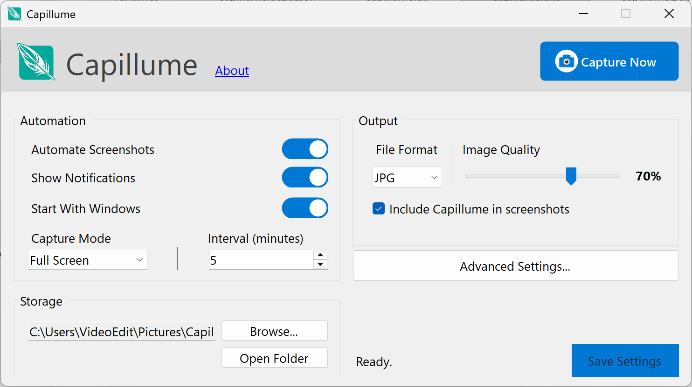
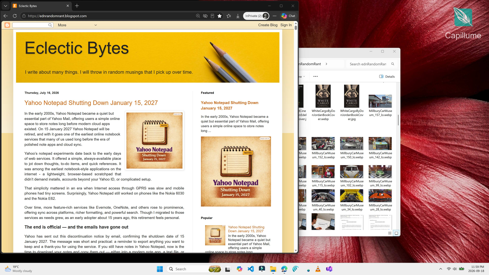
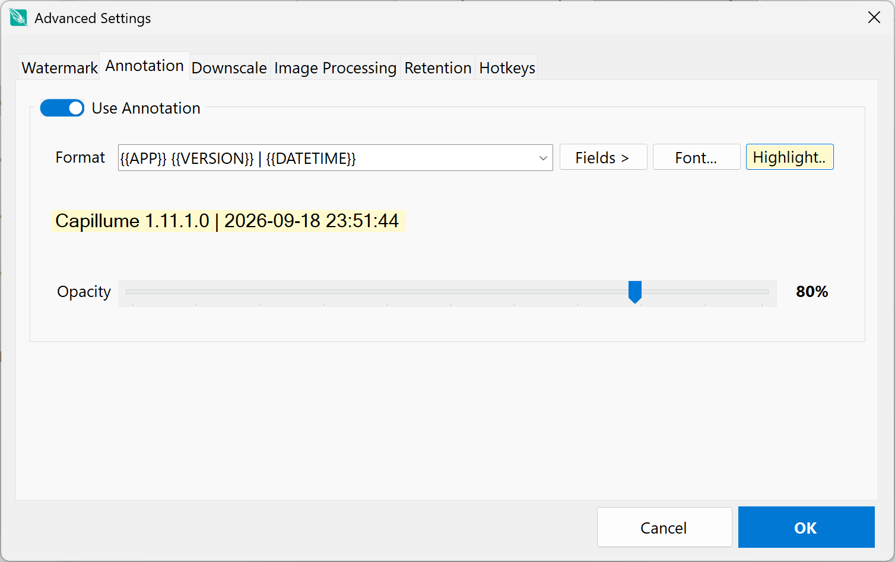
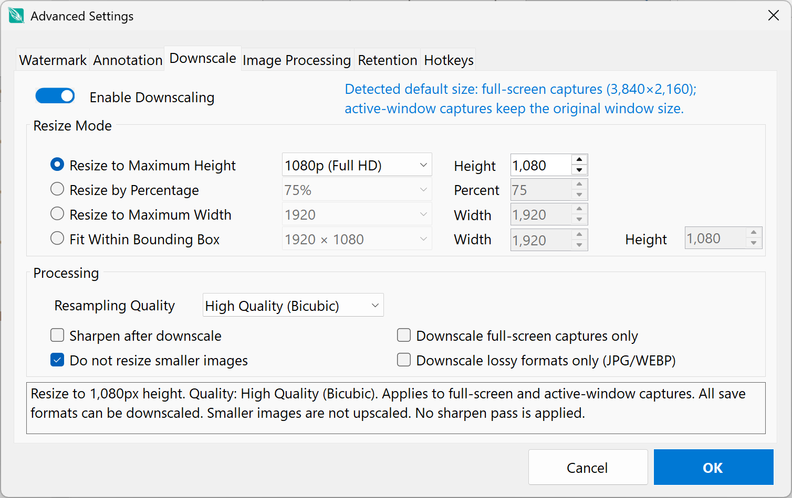
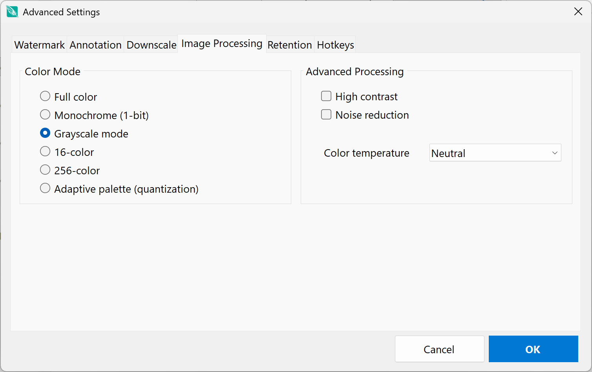
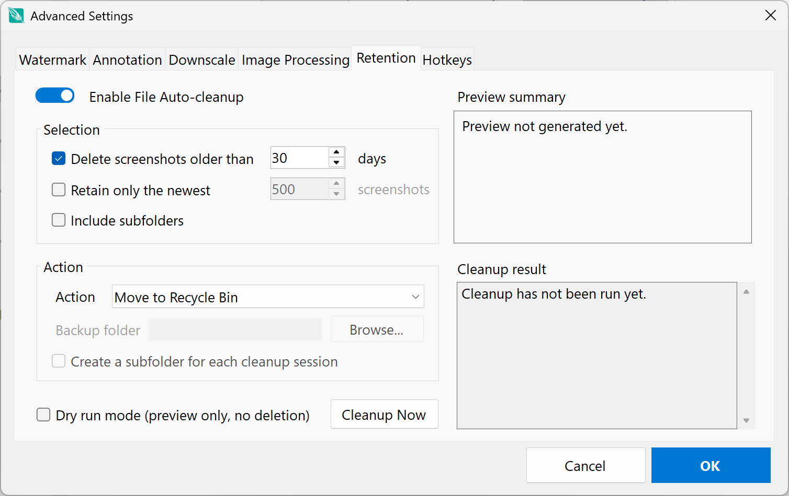
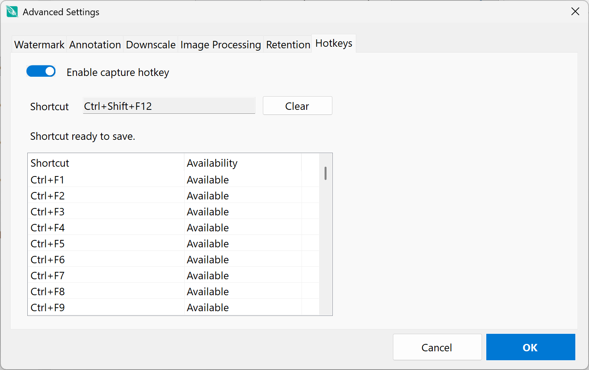

Proof of work
Remote workers and freelancers can create scheduled, local screenshots when a client or project requires a record of activity.
Capillume keeps a reliable visual record of your desktop or active window—on your schedule, in your format, with the controls you need.
For Windows 10 and later · Requires the .NET 10 runtime

The Capillume main window · Capture settings at a glance
Capture a complete, high-resolution view of your desktop and keep a clear visual record of your work, activity, or creative process.

Capillume is a transparent, local-first tool for people who need dependable screenshots—not hidden surveillance or video recording.
Remote workers and freelancers can create scheduled, local screenshots when a client or project requires a record of activity.
Capture bug reproduction, long-running test progress, or a build time-lapse without manually taking screenshots.
Technical writers, support teams, and trainers can collect timed desktop captures for tutorials, SOPs, and training materials.
Students, exam proctors, and lab computers can use scheduled full-screen or active-window capture with appropriate consent.
Power users can keep a lightweight screenshot archive locally, with configurable retention instead of a cloud service.
Capillume stays visible in the Windows system tray and is intended for informed, consent-based use—not stealth monitoring.
From the first capture to the final file, Capillume gives you precise control while staying quietly available in the system tray.
Capture every connected display or just the active window. Use Capture Now, a global hotkey, or a schedule.
Choose your interval and destination, then let Capillume run unobtrusively from the system tray.
Save as PNG, JPG, BMP, or WebP with configurable quality and flexible downscaling options.
Add text or image watermarks, plus dynamic capture details such as time, user, system, and application.
Apply color modes, contrast, noise reduction, and color temperature adjustments to your captures.
Automatically clean up by age or file count, with options to back up, recycle, or permanently remove old images.
Save screenshots to a folder you control. Capillume does not upload images or send them to an online service.
Keep Capillume running quietly in the tray with quick access to Show, Capture Now, About, and Exit.
Scheduled capture pauses during Windows lock and sleep, resumes after wake, and captures immediately when the schedule restarts.
Launch automatically when you sign in and let Capillume begin in the system tray, ready for its schedule.
Choose PNG, JPG, BMP, or WebP. Tune JPG and WebP quality to balance image detail and file size.
Use Cleanup Now with dry-run mode to preview selected files and estimated space before anything changes.
Install, choose your capture workflow, and let Capillume handle the routine work. Capillume is designed to stay out of your way while giving you the detail and flexibility to build a workflow that fits.
Run the setup on your Windows. The build is self-contained and does not need a separate .NET runtime.
Select full desktop or active window mode. Configure schedule, output format, quality and location.
Set optional watermark, annotation, downscaling, image processing and screenshot retention settings.
Click Save, then use the schedule, Capture Now, or global hotkey for an immediate screenshot.
Capillume keeps powerful options organized in focused settings panels, so you can fine-tune your screenshot workflow without getting in the way.





Capillume saves images to the local folder you configure, such as %USERPROFILE%\Pictures\Capillume Screenshots. It does not upload screenshots or send them to an online service.
Clear answers before you download.
No. Capillume captures still images only. It is designed for scheduled screenshots and on-demand captures.
Yes. Choose Active Window mode, or choose Full Screen to capture all connected displays.
In the folder you choose. By default, screenshots are saved in a Capillume Screenshots folder in your Windows Pictures folder.
Check that the destination folder exists and that your account can write to it. Windows Security’s Controlled folder access or another antivirus program can also block saves. Review its protection logs, then allow the Capillume executable to write to the destination folder if needed.
The packaged 64-bit Windows release is self-contained with the .NET 10 runtime.
Scheduled capture pauses automatically and resumes after unlock or wake, taking one screenshot immediately before continuing the normal schedule.
Yes. Configure age and file-count rules, then move files to the Recycle Bin, delete permanently, or back them up first. Dry-run mode previews changes.
Get the latest Windows build from GitHub Releases.